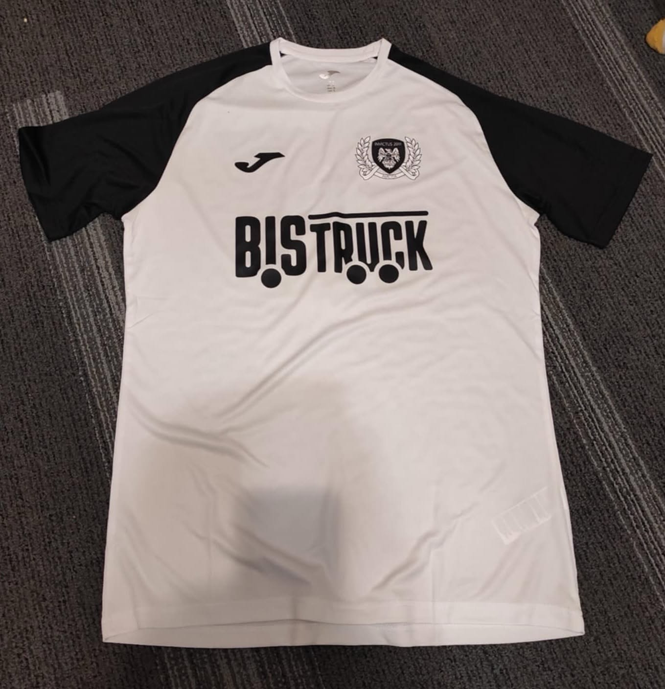
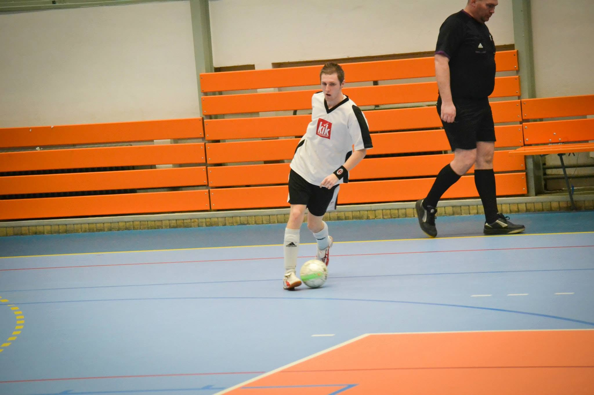
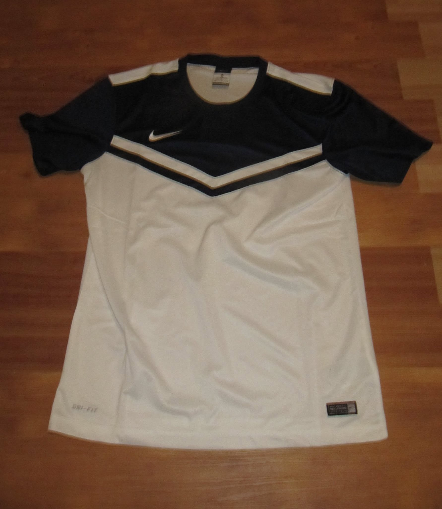
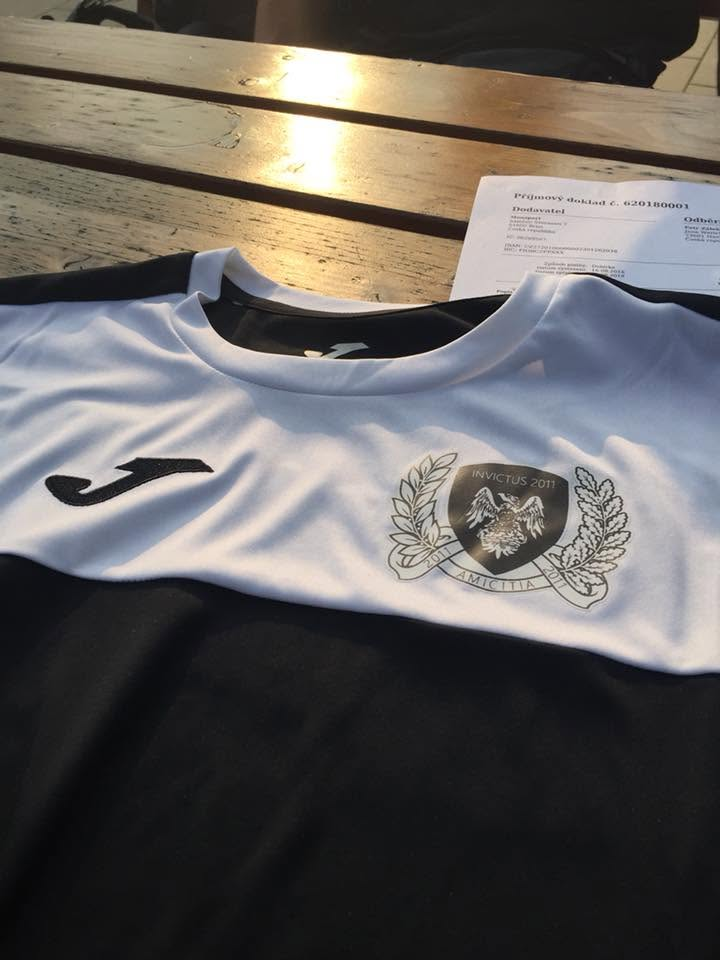

← Zpět na historii klubu
Historie
Klubová identita
Historie
dresů.
Od prvních vypůjčených sad až k vlastnímu bíločernému dresu s klubovým znakem a partnerem Bistruck.

2011–2024
Pět generací dresů
Dresy se měnily společně s klubem. Každá sada připomíná jinou část příběhu Invictu.
- 01
Saxon
Do prvních pěti kol své historie nastoupil tým v zapůjčených erárních dresech Saxon.
-
02
KIK
První vlastní dresy s logem KIK provázely Invictus tři a půl sezony.

-
03
Nike Victory
V lednu 2015 přišla nová sada Nike Victory a s ní další etapa klubové identity.

-
04
Joma
Invictus poprvé přešel na dresy značky Joma. Bíločerná sada nesla klubový znak a zlatý nápis Invictus 2011.

-
05
Joma × Bistruck
Nová sada Joma zachovala bíločernou identitu a poprvé nesla také výrazné logo klubového partnera Bistruck.